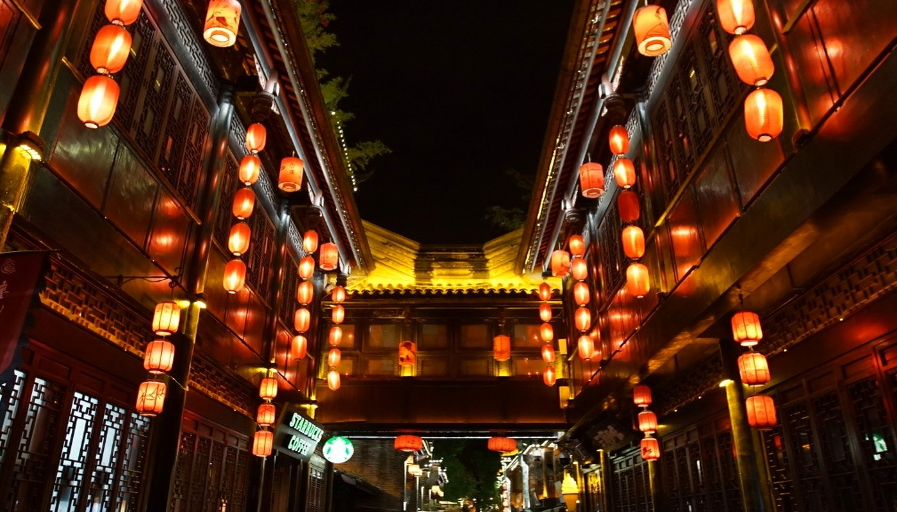
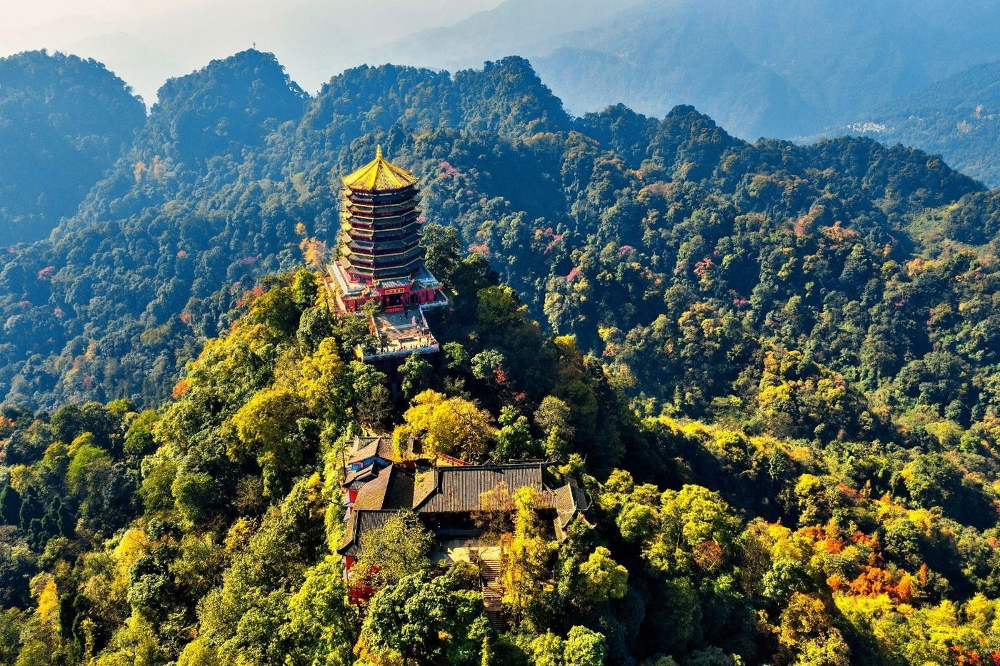
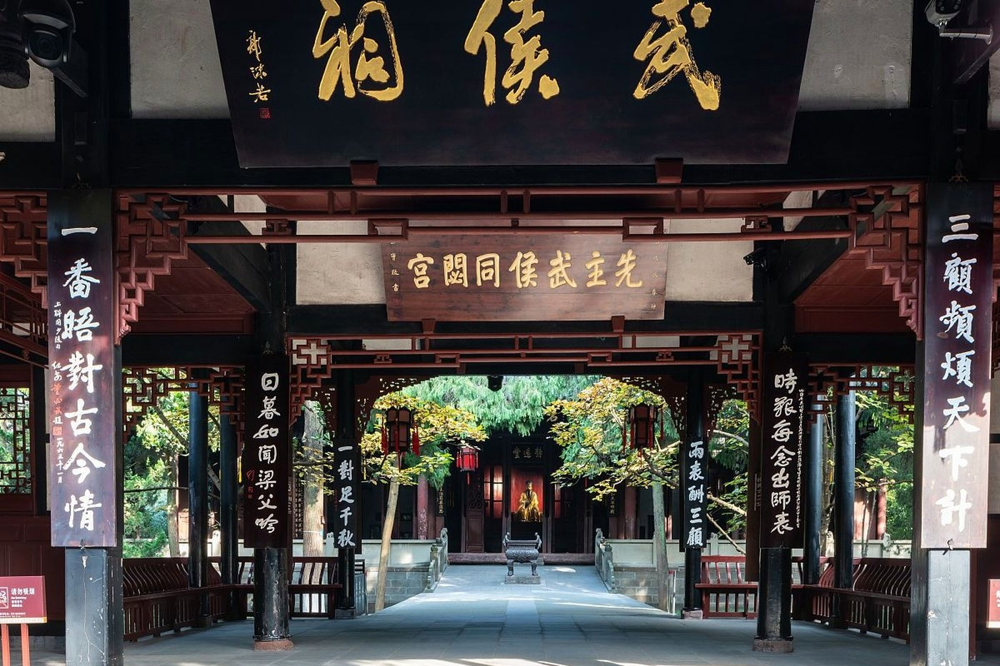

01
01
KUANZHAI ALLEY
宽窄巷子
青砖黛瓦的清代街巷，宽巷子的闲、窄巷子的静、井巷子的烟火，拼出老成都的轮廓。
02 / SIGHTS OF CHENGDU
从千年古堰到雪山道观，从三国祠庙到熊猫竹林，成都的风景，总在山水与人间之间。
必游目的地 / DESTINATIONS
把脚步放慢一点。成都的景点不适合赶场，适合在一条巷子、一段红墙或一片竹林里，多停留一会儿。
01
KUANZHAI ALLEY
青砖黛瓦的清代街巷，宽巷子的闲、窄巷子的静、井巷子的烟火，拼出老成都的轮廓。

02JINLI ANCIENT STREET
紧邻武侯祠的仿古街，红灯笼亮起时，三国故事与市井小吃在夜色里重逢。
 03
03
GIANT PANDA BASE
清晨是看熊猫的最好时段。竹林、产房与幼崽别墅，让“国宝”的日常近在眼前。
DUJIANGYAN IRRIGATION
李冰父子留下的无坝引水工程，运行两千余年仍在灌溉成都平原。站在鱼嘴，看岷江分流。

05MOUNT QINGCHENG
“青城天下幽”。前山道观林立，后山溪谷清幽，是成都人夏日的天然空调。

06WUHOU SHRINE
中国唯一的君臣合祀祠庙。红墙竹影、三国碑刻，把一段英雄史诗留在成都。
路线建议 / ROUTES
根据体力和时间自由组合。第一次来成都，建议把市区与近郊分开安排，节奏会更从容。
宽窄巷子 → 人民公园 → 武侯祠 → 锦里夜景。步行与地铁结合，适合第一次到成都。
清晨熊猫基地 → 午后都江堰。时间较紧，建议乘景区直通车或包车，减少换乘。
第一天都江堰，宿青城山脚；第二天前山或后山徒步。适合喜欢自然与道教文化的旅行者。
温馨提示：景区开放时间、门票与预约规则会随季节调整，出行前请以景区官方公告为准。
继续探索 / KEEP GOING